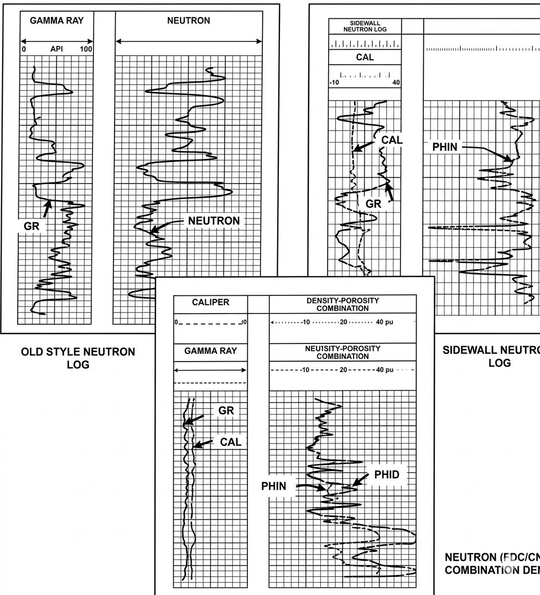

STEP 01
Send us your logs
Upload your scanned records, images, or TIFF files securely.
FULL-SERVICE WELL LOG DIGITIZATION
As low as $0.49 per curve per 100 feet. We handle the entire process from image/TIFF to clean import-ready LAS output.
GET STARTED - REQUEST A QUOTE ↗WHY LOG DIGITIZING
Your well logs contain valuable data. We make that data easier to access, analyze, store, and use by converting physical records into clean digital output with a full-service workflow.
Whether you have one log or one hundred, we do the heavy lifting so your team can focus on interpretation.
GET TO KNOW US →
HOW IT WORKS
Flexible support to help your team move from source files to organized, review-ready deliverables.
Upload your scanned records, images, or TIFF files securely.
We process logs with high precision and convert them into clean vector/digital curves.
Get organized LAS files ready for import into any geoscience software platform.
PRICING
As low as $0.49 per curve per 100 feet.
One individual well log. $29.99 minimum applies to single-well projects.
A few wells or sample logs (5 to 20 wells). Best value for growing project teams.
Bulk legacy log collection and custom enterprise archiving. Our specialty.
READY TO DIGITIZE YOUR WELL LOGS?
Share a little about your project and the kind of support you need.